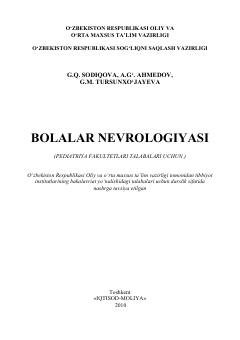

BNPediatriya fakulteti talabalari va shifokorlar uchun bolalar nevrologiyasi bo'yicha amaliy darslik.
Mazkur darslik tibbiyot institutlarining pediatriya fakultetlari talabalari uchun mo'ljallangan bo'lib, bolalar nevrologiyasining umumiy va xususiy masalalarini o'z ichiga oladi. Unda asab tizimining anatomik-fiziologik xususiyatlari, tekshirish usullari, zamonaviy tashxis qo'yish uslublari hamda turli asab kasalliklarining etiologiyasi, patogenezi va davolash yo'llari batafsil yoritilgan. Kitob talabalar bilan birga yosh nevropatologlar va amaliyotchi shifokorlarga ham mo'ljallangan.